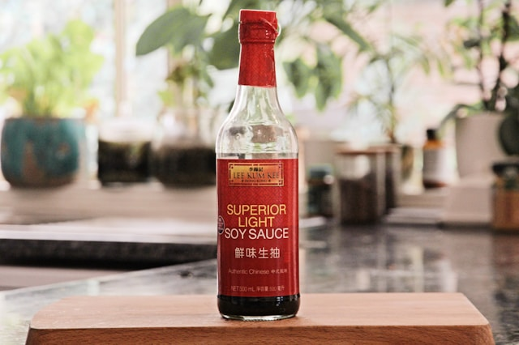
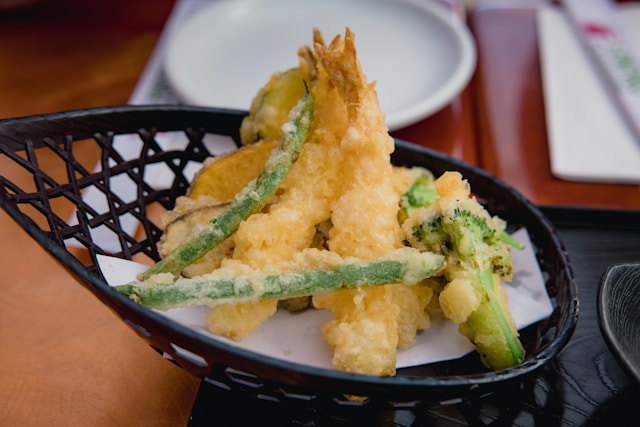

Podstawowe składniki kuchni japońskiej
- Sos sojowy - baza wielu potraw i marynat
-
Miso - pasta ze sfermentowanej soi, podstawa zup
- Ryż - serce japońskich posiłków
- Wodorosty nori i wakame - do sushi i zup

Kilka technik stosowanych w kuchni japońskiej
-
Tempura - smażenie w głębokim tłuszczu, które
tworzy lekką, chrupiącą powłokę wokół warzyw i owoców morza.
-
Yakitori - grillowanie bezpośrednio na węglu
drzewnym, popularne zwłaszcza w przypadku szaszłyków z kurczaka.
-
Sashimi - precyzyjne krojenie surowych składników,
wymagające lat praktyki i doskonałych umiejętności.
